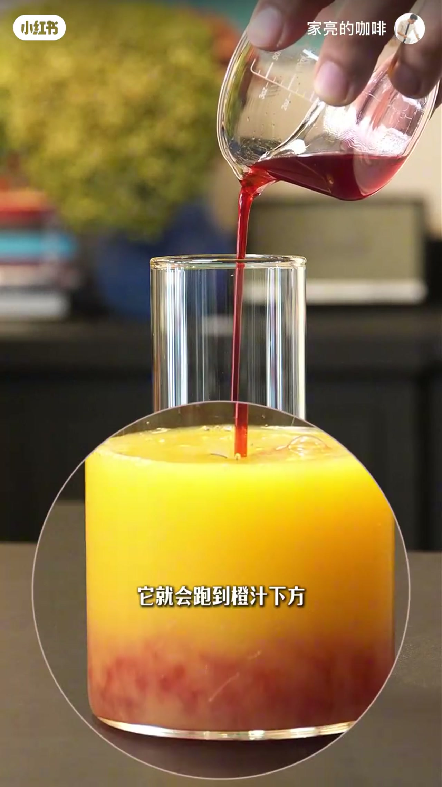
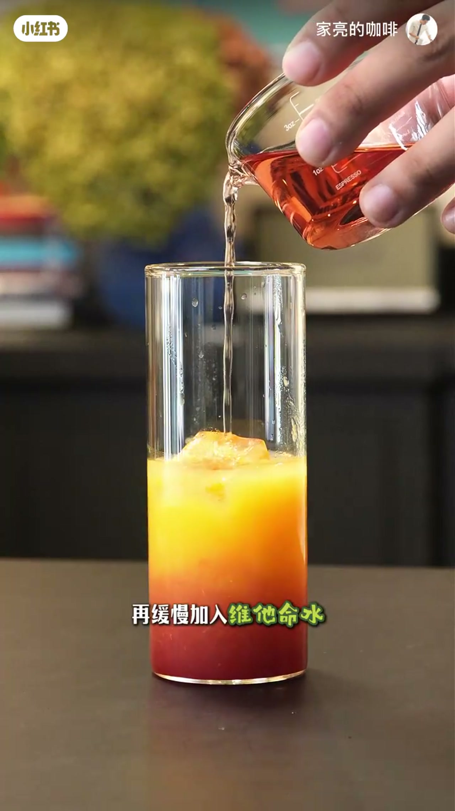
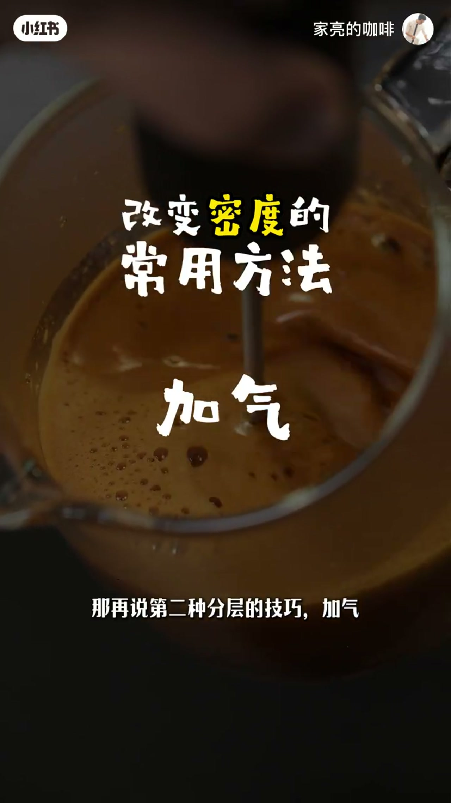
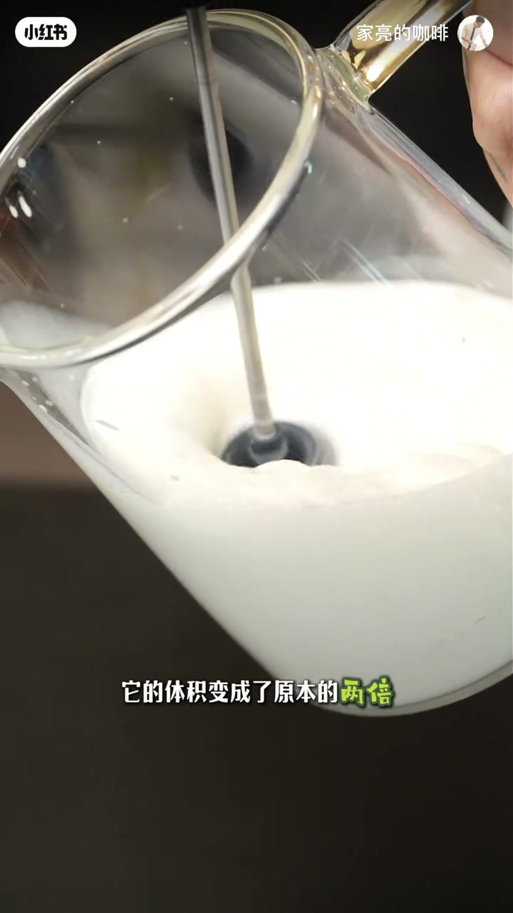
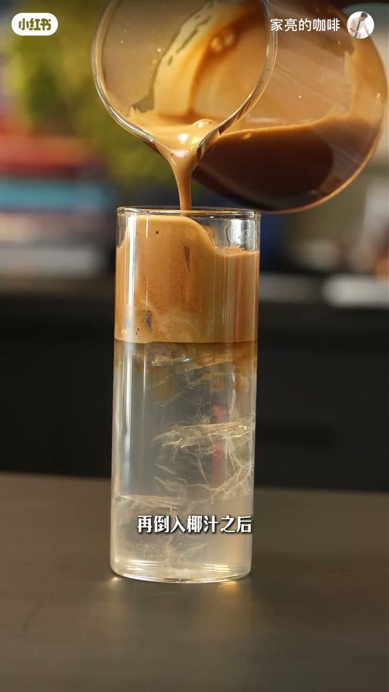
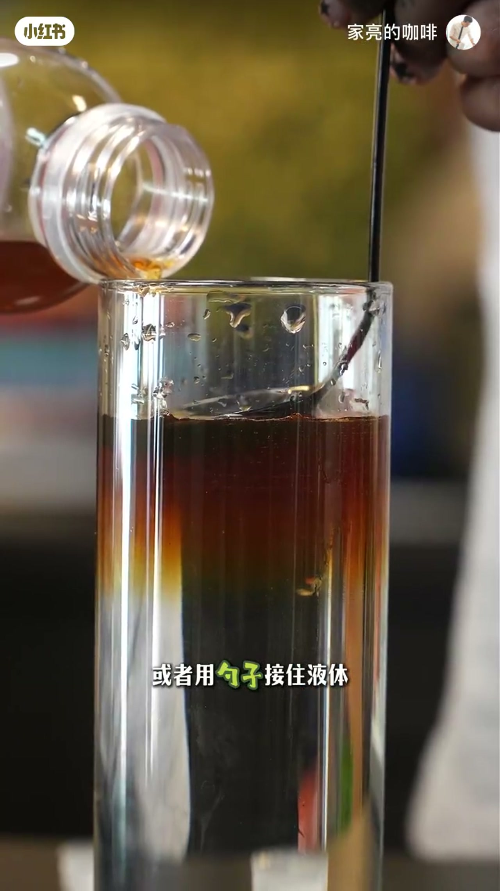

内容要点
家亮的咖啡用两分钟讲清饮品分层的物理核心：分层靠的是密度差，常用手段只有「加料」和「加气」。他先用橙汁、红石榴糖浆、维他命水、纯净水与金酒做加料演示，再对比黄油牛乳与意式浓缩在椰汁上的加气分层，最后点出大家最常失败的原因——向下冲击力把界面冲花，要用冰块或勺子把液体横向铺开。
知识结构
分层广泛用于咖啡与鸡尾酒；核心是密度差，改变密度常用加料与加气；片尾会总结失败原因。
杯中橙汁加红石榴糖浆会下沉（更重）；加冰块后缓慢倒入维他命水与纯净水会依次上浮；酒精也能浮在水上，金酒加点糖浆可见多层。
黄油牛乳直接倒入咖啡会沉底混合；用打奶器打发进气后体积约翻倍、密度变小，再倒入则浮在上方；意式浓缩加白砂糖打发后倒入椰汁同样可分层。
加液时的向下冲击会冲掉干净界面；放冰块或用勺子接住液体，把力化解成横向铺展，分层才干净鲜明。
分层只是让咖啡饮品好看的方法之一；作者预告后续还会分享其他让饮品好看又高级的做法。
分层的本质是控制密度：加糖浆等重料下沉、加水或酒精等轻料上浮；加气（打发）也能让牛乳或浓缩变轻浮在上方。真正决定「界线干不干净」的，往往是倒液冲击力——用冰块或勺背把液体横向铺开，比反复换配方更管用。
00:00-00:16分层靠密度差：加料与加气两条路
开场直接定调：「分层广泛运用在咖啡饮品和鸡尾酒的制作中，其实简单到有手就行。」家亮把原理收成一句话——「分层的核心其实就是密度的差别」。
改变密度常用两种方式：加料和加气。他预告视频最后会把大家失败的原因总结出来，让后面的演示不只是「好看」，也对照着避坑。
00:16-00:49加料分层：从橙汁到金酒的多层演示
第一组演示从橙汁开始：倒入红石榴糖浆后它会跑到橙汁下方，因为密度更大、更重。丢两块冰块，再缓慢加入维他命水——它漂在橙汁上面，因为比橙汁更淡、密度小；继续加纯净水，又会浮到最上方。
他还问「还有什么液体能浮在水上」，答案是酒精。另备一杯倒入金酒，只加一点点糖浆调色，再倒入杯中，再次出现清晰分层，方便观众看清颜色层次。


00:49-01:24加气分层：打发黄油牛乳与意式浓缩
第二种技巧是加气。以咖啡为例：黄油牛乳直接倒入会沉下去、混合在咖啡液里；用打奶器打发后，空气进入，体积变成约两倍，密度变小变轻，再倒入咖啡就会自然浮在上方形成分层。
同理，一份意式浓缩直接倒入椰汁会混合；若在浓缩里稍加白砂糖再打发，倒入椰汁后就能形成分层。画面把「未打发沉底」和「打发后上浮」放在同一套操作里对照。



01:24-01:49失败原因：向下冲击力要把力横过来
收尾细节也是常见翻车点：加液体时会有向下的冲击力，两种液体撞在一起就没有干净分层。「放两颗冰块进去，或者用勺子接住液体」——借助辅助工具化解冲击力，让液体横向铺在下方液面上，分层才会自然、干净、鲜明。

01:49-02:05分层只是好看的方法之一
家亮提醒：分层只是把咖啡饮品做好看的方法之一，后续还会出系列视频，分享除了分层之外还有哪些方式能让饮品好看又高级。片尾自报：「OK，我是家亮。」
完整转录（65段）
以下文本由 Whisper medium 模型自动转录，可能存在少量识别误差，已尽可能修正。
分层 广泛运用在咖啡饮品和鸡尾酒的制作中
其实简单到有手就行
分层的核心其实就是密度的差别
改变密度一般常用两种方式
加料和加气
那视频的最后呢
我也会把失败的原因给你总结出来
准备一个杯子
杯中倒入橙汁
再加入红石榴糖浆
它就会跑到橙汁下方
因为它的密度更大 更重
丢两块冰块进去
再缓慢加入维他命水
它就会漂浮在橙汁上面
因为它比橙汁要更淡 密度小
继续再往杯中加入纯净水
它就会浮在最上方
那还有什么液体能浮在水上吗
有 酒精
准备好一个杯子
倒入金酒
为了让大家看清颜色的分层
只加一点点的糖浆调色
继续再加入到杯中
就会又出现一层分层效果
那再说第二种分层的技巧
加气
比如一杯咖啡
直接倒入黄油牛乳
它就会直接沉下去
混合在咖啡液中
用打奶器打发黄油牛乳
随着脚打 空气进入
它的体积变成了原本的两倍
密度变小 也变得更轻
这时再倒入咖啡液中
就自然浮在上方
形成分层效果
再比如
一份意识浓缩直接倒入椰汁
就会直接混合
但在意识浓缩中
稍微加一点白砂糖
再将其打发
再倒入椰汁之后
就会形成这样的分层效果
那最后就是再给大家总结一个小细节
也是大家往往失败的原因
我们在加液体时
会有一个向下的冲击力
两种液体冲击到一起
就没有了干净的分层效果
那放两颗冰块进去
或者用勺子接住液体
总之 借助其他的辅助工具
来化解液体向下的冲击力
让它横向地铺在下方的液体上
分层也就自然 干净 鲜明了
分层只是把咖啡饮品做好看的
其中一个方法之一
后续我还会出一系列的视频给大家分享
除了分层之外
还有哪些方式可以让我们的咖啡饮品变得好看又高级
OK 我是加亮